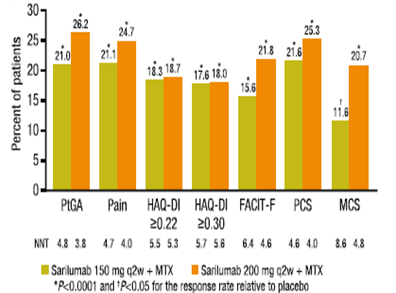
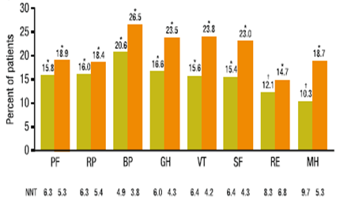
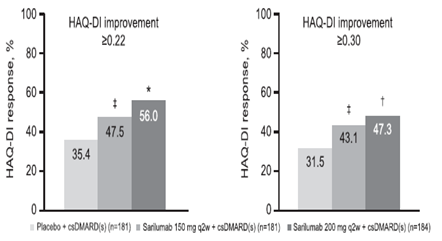

参考：KEV用量による患者関連指標（PROs）の違い
- ●MOBILITY試験のPROs（Patient-reported outcomes）の解析結果
- ●方法：RA患者1,197名をプラセボ、SAR150mg、SAR200mgに分け、MTX併用で2週間毎52週間使用
- ●結果：SAR150mg、SAR200mgともに24週時のPtGA,pain,HAQ-DI,SF-36,FACIT-F scoreを有意に改善、52週まで維持
24週時のPROs（プラセボ群との差）
（MCID〔臨床的に意義のある最小変化量〕以上の改善を示した患者割合）


全体的に200mg方が150mgよりも良好な成績
【参考】TNF-IR例へのHAQ-DI改善効果（TARGET試験）

HAQ-DIの改善も200mg良い
- PROs改善、HAQ-DIは200mg＞150mgであることからも150mgはAE発現時対処用
*SF-36の8つの概念は(1)身体機能 (2)日常役割機能（身体) (3)体の痛み (4)全体的健康感 (5)活力 (6)社会生活機能 (7)日常役割機能（精神) (8)心の健康